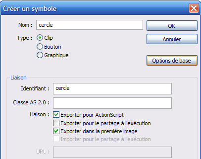
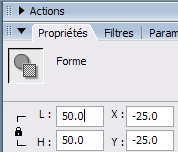

Hier je surfais sur la toile, à la recherche d'informations pour la création d'un moteur 3D, et je suis tombé sur quelques effets sympa, que j'ai essayé de reproduire.
Voilà ce que l'on va apprendre à réaliser dans ce tutoriel (il est bien évident qu'une fois le principe compris, c'est à vous de l'exploiter pour l'améliorer) : http://heero.blog.free.fr/blog/autres/menu3D.swf
Note : ce tutoriel est destiné aux utilisateurs de Flash ayant un minimum de bases en ActionScript, je ne détaillerai donc pas tout.
1) Créez un nouveau movieClip : Insertion => Nouveau Symbole (ctrl + F8). Puis modifiez les propriétés comme ci-dessous :

2) Sur la première image du scénario (toujours dans le clip cercle), dessinez un cercle. (couleur du centre : gris, et couleur des contours : blanc). Enfin, modifiez ses dimensions (H : 50 px / L : 50 px), et ses coordonnées, pour que celui-ci se trouve centré (X : -25 px / Y : -25 px).

3) Insérez une 2e image-clef (encore et toujours dans le clip cercle), dans laquelle vous modifiez la couleur de fond du cercle (rouge par exemple).
4) Sur la première image d'un nouveau calque, ajoutez le code suivant dans la fenêtre action :
1) Voilà, tous les éléments ont été créés, il ne nous reste plus qu'à nous attaquer à la partie la plus 'difficile' de ce tuto : le code. En effet, nous n'allons pas créer un véritable moteur 3D (ce qui, entre nous, est au-delà de mon niveau :p ) mais plutôt d'en simuler un. Tout notre code sera placé sur la première image du scénario de la scène principale.
2) On commence par créer quelques variables sur lesquelles va se baser notre animation.
var profondeur:Number = 1000;
var largeur:Number = 200; // ou Stage.width
var hauteur:Number = 200; // ou Stage.height
var centre_x:Number = 100; // ou largeur/2
var centre_y:Number = 100; // ou hauteur/2
var frein:Number = 5;
var interval:Number;
Ici on veut que l'animation prenne toute la taille du document, et que son centre soit aussi le centre de notre document.
La variable profondeur va être l'une des bases les plus importantes de notre 'simulation' d'effet 3D. Nous verrons plus tard l'utilité de la variable frein (qui ne porte pas ce nom par hasard, vous vous en doutez :) ).
3) On crée une liste de noms, vous pouvez les remplacer par n'importe quoi bien, évidemment (ce seront les mots qui apparaîtront dans les cercles) :
var tab_nom_1:Array = new Array("1","2","3","4","5","6","7","8","9","10");
4) Maintenant, nous allons créer une fonction qui crée et place nos occurrences (les copies) du clip cercle de la bibliothèque :
on crée la fonction creer_btns à laquelle on passe 2 paramètres. Le premier, chem1 sera l'adresse du clip conteneur de notre animation : dans notre exemple, celle-ci aura pour valeur _root, c'est-à-dire la racine de notre animation. Le deuxième tab_nom est un tableau contenant des noms (comme son nom l'indique ^^ ).
function creer_btns(chem1:MovieClip, tab_nom:Array):Void {
// les instructions de la fonction
}
Ensuite on crée une boucle For qui va créer autant de clips que de lignes dans le tableau tab_nom (pour obtenir le nombre de lignes, on utilise la méthode : monTableau.length).
var taille:Number = tab_nom.length
for (var i:Number=0 ; i<taille ; i++) {
// mes instructions
}
On va maintenant créer une variable qui nous servira à contenir le niveau de notre clip, celle-ci contiendra un nombre entre 1 et la valeur de la variable profondeur (1000 dans notre cas). Pour cela on utilise la méthode Math.random() qui nous renvoie un nombre à virgule entre 0 et 1 que l'on multiplie par la valeur de la variable profondeur. Et pour obtenir un nombre entier, on utilise la méthode Math.round() qui arrondit notre nombre à l'entier le plus proche.
var var_profondeur:Number = Math.round(Math.random()*profondeur);
On crée un clip conteneur vide, que l'on nomme en fonction de 'i' (si i=0, le clip sera nommé clip0, si i=1 => clip1, etc.).
Lors de la création dynamique de plusieurs clips en fonction d'une variable, la modification des propriétés de ceux-ci nécessite de connaître leur nom. Ce qui à première vue n'est pas si facile que ça. Ex. : soient plusieurs clips "clip+i" ; si i=5, on veut donc travailler uniquement sur le clip clip5, il est bien évident que l'on ne peut pas écrire "clip"+i._x (_x retourne l'abscisse du clip). Pour cela, on utilisera la syntaxe suivante : clipConteneur["clip"+i]. En lisant cette ligne, Flash travaillera sur un seul et unique clip (si i=5, alors il traduira cette ligne par clipConteneur.clip5). Mais cette notation est lourde : pour simplifier l'écriture du code, on va donc créer une variable-raccourci :
var chem2:MovieClip = chem1["clip"+i];
On va maintenant créer plusieurs variables incluses dans chaque clip. Les 2 premières sont les positions verticale et horizontale des clips quand ils seront au premier plan, on veut donc une valeur entre -largeur/2 et +largeur/2 (idem avec la variable hauteur).
Pourquoi ne pas prendre une valeur entre 0 et largeur pour faire plus simple ?
C'est une simple question de représentation mentale ; souvenez-vous, on a défini un centre (avec les variables centre_x et centre_y), on calcule donc les coordonnées des clips en fonction de ce centre. On doit aussi enregistrer la profondeur du clip (puisque l'on aura besoin de la récupérer pour la faire varier). Enfin, la dernière nous sert juste à enregistrer la valeur actuelle de 'i' (elle nous sera utile pour récupérer les valeurs des variables du clip sur lequel on a cliqué).
Maintenant que l'on a créé les variables et positionné le clip, il faut le remplir avec quelque chose (puisque voir se déplacer des clips vides, entre nous, c'est un peu difficile :D ). On va donc y attacher le clip cercle créé à l'étape 2, ainsi qu'un champ texte, dans lequel on va écrire la valeur de la ligne 'i' du tableau tab_nom (qui, je vous le rappelle, contient des noms).
Bon : les clips sont créés, mais il ont tous la même taille (logique, ce sont des copies parfaites) et vous serez (j'espère) d'accord avec moi que pour donner un effet d'éloignement, ce n'est pas le top ^^ . On va donc arranger cela en modifiant les propriétés _xscale et _yscale des clips (elles modifient le % de la taille : par défaut, elles sont à 100 (%)).
Maintenant il reste une étape à initialiser, c'est-à-dire l'exécution des actions quand on clique sur le clip. On déplace la tête de lecture de ce clip sur la deuxième image (le cercle à fond rouge, dans notre cas). Puis on supprime la temporisation que désigne la variable interval pour éviter de créer 2 fois une même temporisation (ce qui aurait pour effet de doubler la fréquence d'exécution de la fonction temporisée). Puis on recrée une temporisation de la fonction deplacement toutes les 40 millisecondes, à laquelle on envoie 3 paramètres (chem1 pour l'adresse du clip conteneur ; le numéro d'index du clip sur lequel on a cliqué ; et enfin la taille du tableau tab_nom, soit le nombre de clips).
5) On crée une deuxième fonction prévue pour être exécutée en boucle pour simuler notre effet 3D : la fonction deplacement. On a vu dans la fonction 1 que l'on avait besoin d'envoyer 3 paramètres importants à la fonction deplacement, il faut donc créer des variables réceptrices.
function deplacement(chem:MovieClip, var_i:Number, nbr:Number):Void {
// instructions
}
La première étape consiste à récupérer le chemin pour accéder aux variables du clip sur lequel on a cliqué : pour cela, aucun problème puisque l'on a pensé à envoyer la valeur de la variable 'i' du clip sur lequel on a cliqué.
var chem1:MovieClip = chem["clip"+var_i];
À ce niveau, une petite vérification s'impose : il faut regarder si le clip est arrivé au premier plan, c'est-à-dire que son niveau est maximal. Si c'est le cas, on supprime la temporisation interval.
Si le clip sur lequel on a cliqué n'est pas au premier plan, alors il faut déplacer tous les clips ; pour cela, je vous propose de créer un effet de vitesse qui ralentit. Je m'explique : on calcule la distance restante à parcourir, puis on demande au clip d'en parcourir la moitié. À la prochaine exécution de la fonction, on lui demande de faire de même, mais comme la distance qu'il restera à parcourir a été divisée par 2, le clip avancera 2 fois moins vite, et ainsi de suite.
C'est ici qu'apparaît l'utilité de la variable frein : c'est elle qui va fixer le % de chemin restant à parcourir (frein=2, la moitié ; frein=3, le tiers, etc.).
var vitesse:Number = Math.ceil((profondeur-chem1.var_niv)/frein);
var vitesse_x:Number = Math.ceil(chem1.var_x/frein);
var vitesse_y:Number = Math.ceil(chem1.var_y/frein);
Une fois les vitesses calculées, il faut modifier les variables et les propriétés des clips ; on crée donc une boucle For pour traiter tous les clips (le nombre de clips est contenu dans la variable nbr).
Comme on augmente la valeur de la variable de niveau de tous les clips, il faut faire en sorte que les clips qui dépassent le premier plan soient remis en arrière-plan (on en profite aussi pour replacer la tête de lecture du clip cercle sur l'image 1).
if (chem2.var_niv>profondeur) {
chem2.cercle.gotoAndStop(1);
chem2.var_niv -= profondeur;
}
Enfin, la dernière difficulté : pour donner l'impression que les clips viennent de loin (notion de fuyantes), on calcule le % du chemin parcouru et on le réutilise dans le positionnement des clips.
var coef:Number = (chem2.var_niv/profondeur);
chem2._x = centre_x+coef*chem2.var_x;
chem2._y = centre_y+coef*chem2.var_y;
Récapitulatif de la deuxième fonction créée :
function deplacement(chem:MovieClip, var_i:Number, nbr:Number):Void{
var chem1:MovieClip = chem["clip"+var_i];
if (chem1.var_niv != profondeur) {
var vitesse:Number = Math.ceil((profondeur-chem1.var_niv)/frein);
var vitesse_x:Number = Math.ceil(chem1.var_x/frein);
var vitesse_y:Number = Math.ceil(chem1.var_y/frein);
for (var i:Number=0 ; i<nbr ; i++) {
var chem2:MovieClip = chem["clip"+i];
chem2.var_niv += vitesse;
chem2.var_x -= vitesse_x;
chem2.var_y -= vitesse_y;
if (chem2.var_niv>profondeur) {
chem2.cercle.gotoAndStop(1);
chem2.var_niv -= profondeur;
}
chem2.swapDepths(chem2.var_niv);
chem2._xscale=Math.ceil(chem2.var_niv/(profondeur/100));
chem2._yscale=Math.ceil(chem2.var_niv/(profondeur/100));
var coef:Number = (chem2.var_niv/profondeur);
chem2._x = centre_x+coef*chem2.var_x;
chem2._y = centre_y+coef*chem2.var_y;
}
} else {
clearInterval(interval);
}
}
6) Maintenant il suffit d'exécuter la fonction creer_btns pour lancer l'animation (et de lui passer les bons paramètres).
creer_btns(_root, tab_nom_1);
7) Récapitulatif global (avec commentaires) :
// Création de la fonction 'creer_btns'.
function creer_btns(chem1:MovieClip, tab_nom:Array):Void{
var taille:Number = tab_nom.length;
for (var i:Number=0 ; i<taille ; i++) {
var var_profondeur:Number = Math.round(Math.random()*profondeur);
// Création du clip conteneur et du raccourci.
var chem2:MovieClip = chem1.createEmptyMovieClip("clip"+i, var_profondeur);
// Création des variables de sauvegarde.
chem2.var_x = Math.round(Math.random()*largeur-largeur/2);
chem2.var_y = Math.round(Math.random()*hauteur-hauteur/2);
chem2.var_niv = var_profondeur;
chem2.i = i;
// Positionnement du clip.
chem2._x = centre_x+chem2.var_x;
chem2._y = centre_y+chem2.var_y;
// On y attache le clip 'cercle'.
chem2.attachMovie("cercle", "cercle", 1);
// Création du champ texte.
chem2.createTextField("texte", 2, -10, -10, 20, 20);
// Écriture dans le champ texte.
chem2.texte.text = tab_nom[i];
// Rend le texte impossible à sélectionner.
chem2.texte.selectable = false;
// Redéfinit la taille du clip (en %).
chem2._xscale = chem2._yscale = Math.ceil(chem2.var_niv/(profondeur/100));
// Définit les actions à exécuter lors du clic sur le clip.
chem2.onRelease = function():Void{
// On place la tête de lecture du clip 'cercle' sur l'image 2.
this.cercle.gotoAndStop(2);
// On supprime la temporisation 'interval' pour ne pas la déclencher 2 fois.
clearInterval(interval);
// On recrée la temporisation 'interval' qui exécutera la fonction 'deplacement', avec 3 paramètres, toutes les 40 millisecondes.
interval = setInterval(deplacement, 40, chem1, this.i, tab_nom.length);
};
}
}
// Création de la fonction 'deplacement'.
function deplacement(chem:MovieClip, var_i:Number, nbr:Number):Void{
// On crée un racourci.
var chem1:MovieClip = chem["clip"+var_i];
// On vérifie si le clip n'est pas déjà au premier plan.
if (chem1.var_niv != profondeur) {
// On calcule les vitesses de déplacement.
// Note : la variable 'frein' diminue les vitesses et donc augmente le temps de déplacement des clips.
var vitesse:Number = Math.ceil((profondeur-chem1.var_niv)/frein);
var vitesse_x:Number = Math.ceil(chem1.var_x/frein);
var vitesse_y:Number = Math.ceil(chem1.var_y/frein);
// On édite les variables et les coordonnées de tous les clips.
for (var i:Number=0 ; i<nbr ; i++) {
// Création d'un raccourci.
var chem2:MovieClip = chem["clip"+i];
// On édite les variables.
chem2.var_niv += vitesse;
chem2.var_x -= vitesse_x;
chem2.var_y -= vitesse_y;
// Si le clip a dépassé le niveau de premier plan.
if (chem2.var_niv>profondeur) {
// On place la tête de lecture du clip 'cercle' sur l'image 1.
chem2.cercle.gotoAndStop(1);
// On édite la variable de niveau.
chem2.var_niv -= profondeur;
}
// On édite le niveau du clip.
chem2.swapDepths(chem2.var_niv);
// On modifie la largeur et la hauteur du clip (en %).
// Note : chem2.var_niv et profondeur, varient entre 0 et 1000, suite au petit calcul de valeur de sortie sont comprises entre 0 et 100.
chem2._xscale = chem2._yscale=Math.ceil(chem2.var_niv/(profondeur/100));
// On calcule le % du chemin parcouru.
var coef:Number = (chem2.var_niv/profondeur);
// On modifie les coordonnées du clip.
chem2._x = centre_x+coef*chem2.var_x;
chem2._y = centre_y+coef*chem2.var_y;
}
} else {
// On supprime la temporisation 'interval' puisque le clip est arrivé au premier plan.
clearInterval(interval);
}
}
// Déclaration des variables globales.
var profondeur:Number = 1000;
var largeur:Number = 200;
var hauteur:Number = 200;
var centre_x:Number = 100;
var centre_y:Number = 100;
var frein:Number = 5;
var interval:Number;
// Création du tableau des noms.
var tab_nom_1:Array = new Array("1", "2", "3", "4", "5", "6", "7", "8", "9", "10");
// Exécution de la fonction 'creer_btns' à laquelle on envoie le chemin du clip conteneur (ici la scène principale '_root') et le tableau des noms.
creer_btns(_root, tab_nom_1);
8) Et pour finir, la dernière étape, celle que vous attendiez tous : l'ENREGISTREMENT. Mais vous l'avez fait tout au long de l'écriture du code bien évidemment :) ... :euh: ... comment ça, non ? :colere2: RHHAAA... pas bien !
Voilà : il ne vous reste plus qu'à publier votre document.
Idées
Pour transformer cette animation en menu, vous pouvez modifier le code pour qu'un clic sur un clip qui est déjà situé au premier plan déclenche une autre action (un getURL(); par exemple).
Il y a aussi un petit problème dans le code à régler : en effet, si l'on crée 2 clips au même niveau, le dernier clip créé va écraser le précédent. Je vous laisse donc imaginer un système pour éviter que cela se produise dans notre application.